Ein ID-Wallet App Design die es dem Nutzer erlaubt Nachweise sicher speichern und vertrauenswürdig mit seinen Kontakten teilen zu können. Zudem kann der User digitale Währungen halten, senden und empfangen.
Bei einer guten User Experience steht der Mensch immer im Mittelpunkt. Doch wer ist eigentlich der Mensch der das Produkt oder den Service nutzt? Wir nutzen bereits seit Jahren Benutzer Registrierungen und seit kurzem auch KYC (Know Your Costumer) Prozesse im Internet, um dem Nutzer eine gewisse Identität zu geben. Seit der Pandemie sind wir in der Lage, Impfzertifikate digital unter unserem Namen nachweisen zu können. Doch bei Gang in die Apotheke oder bei schließen eines neuen Handyvertrages, ist jeder deutsche Staatsbürger auf seinen Personalausweis angewiesen um sich in einer fortschreitend digitaleren Welt auszuweisen. Selbst Dokumente wie der Handyvertrag, werden noch physisch ausgehändigt und Unterschriften werden auf ein Blatt gekritzelt. Bei meiner Recherche nach einer digitalen Identität, bin ich deshalb auf die folgende Problemstellung gestoßen. Was uns alle zu folgendem Problem bringt.
warning
Problem
Das Fehlen digitaler Nachweise ist eines der drängendsten Digitalisierungshemmnisse unserer Zeit.
Hypothese
Eine App zum speichern einer digitalen Identität, kann Verifizierungsprozesse, Datentransfers sowie Signaturen einfacher und schneller ermöglichen.
flashlight_on
Ziel
Ein App-Design entwickeln, die das Aufbewahren, Teilen & Hinzufügen von digitalen Nachweisen ermöglicht und somit die Funktion einer digitalen Brieftasche erfüllt.
Research
3-4%
wirtschaftliche Vorteile in Höhe des BIP im Jahr 2030, die digitale Identitäten pro Land in reifen Volkswirtschaften freisetzen könnten. Quelle: MGI-Studie „Digitale Identifikation – Ein Schlüssel zu inklusivem Wachstum“; IHS Markit
Nutzer
Welche Nutzer werden angesprochen?
Potentiell jeder Staatsbürger mit einer eID in seinem/ihrem Personalausweis.
Konkurrenz
Bisherige Lösungen
Das Verifizieren einer Identität mit Hilfe von NFC und dem ,im Personalausweis integriertem, eID-Chip.
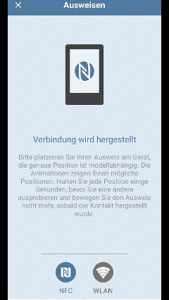
NFC Verifizierung in der AusweisApp2
Der offizielle Verifizierungsprozess des Personalausweises nach den vorgaben der Bundesdruckerei Deutschland
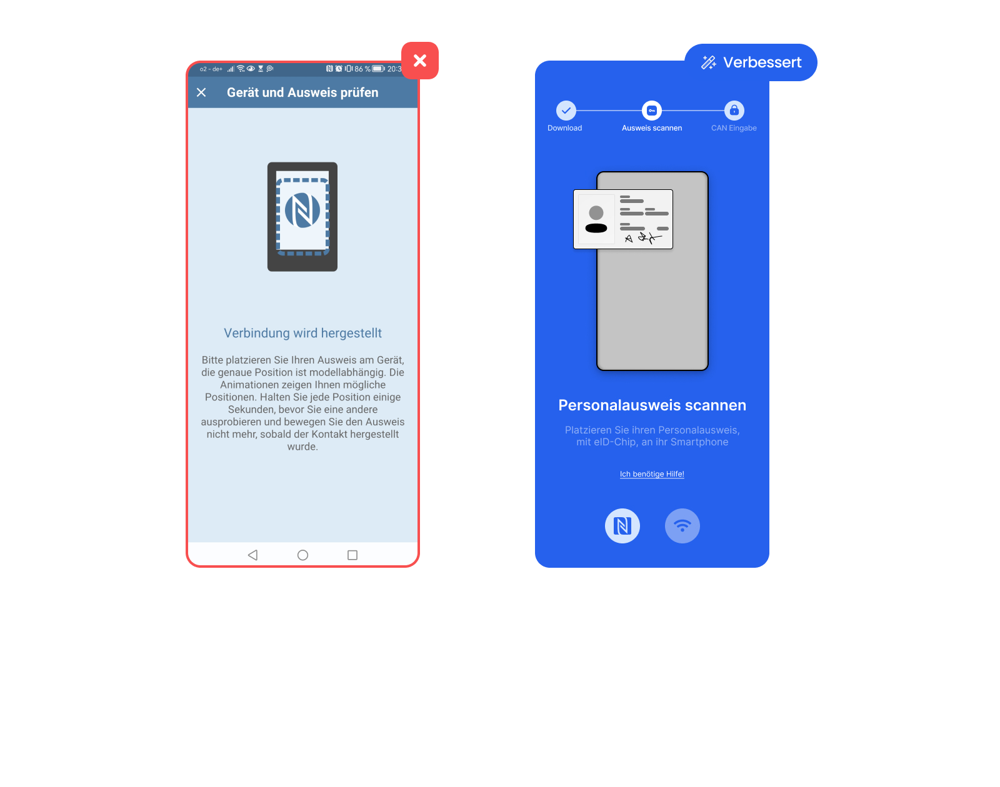
SWOT Analyse
Was kann man von der Konkurrenz lernen?
Da bist zum jetzigen Zeitpunkt noch keine voll Funktionsfähige ID-Wallet auf dem Markt existiert habe ich mich an existierenden Beta Versionen wie zum Beispiel die "Lissi Wallet" oder Crypto Wallets wie die "Coinbase Wallet" orientiert.
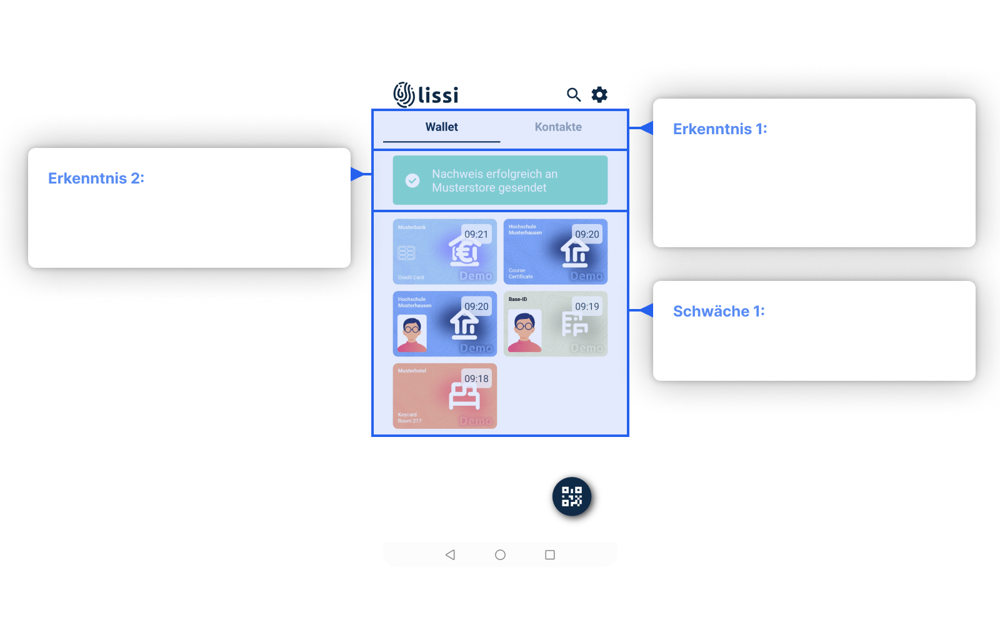
warning
Challenges
Mit der Zeit werden immer mehr Nachweise gespeichert sodass es dem User Interface an Übersichtlichkeit stören wird.
Startscreen
Das Startscreen Design
Hier setze ich den Fokus auf ein Interface Design und Erlebnis das möglichst viele Nutzer vertraut sein soll.
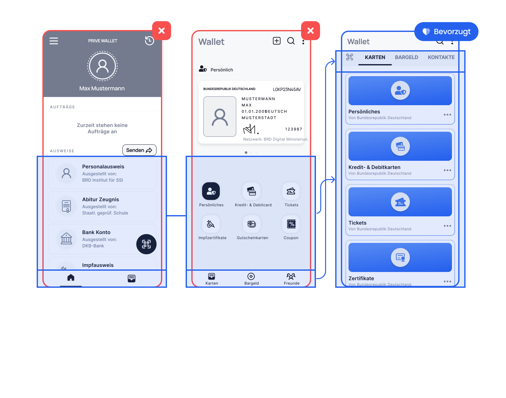
Information Architecture
Der technische Aufbau der App
Es sind viele Details sind in der Architektur mit enthalten die noch nicht im Design implemetiert wurden.
User Flow
Wie werden User Flows erfolgreich absolviert?
Im folgendem ist ein möglicher User Flow dargestellt, so wie ich ihn der User im späteren Prototypen durchlaufen wird.
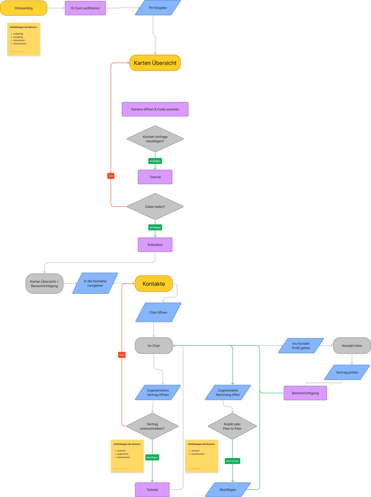
LOFI Design
Das Low-Fidelity Design testen.
Hier habe ich User Flows wie das Onboarding oder Komponenten entworfen die im High-Fidelity Design angepasst wurden.
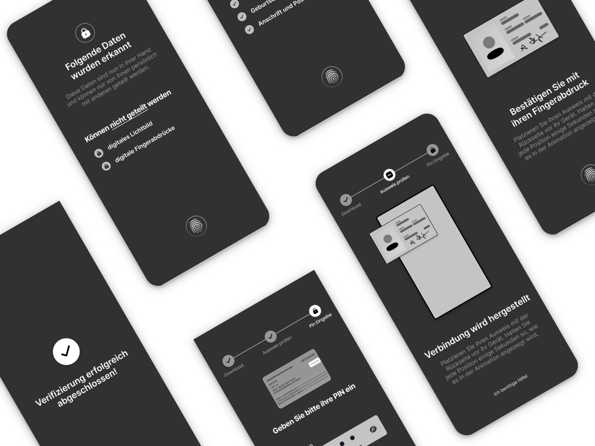
Komponenten
User Feedback Interaktion
Dies sind die Entwürfe eines Bottom Sheets, welches bei der User Interaktion mit anderen Usern nach einer Bestätigung zum teilen von Daten fragt.
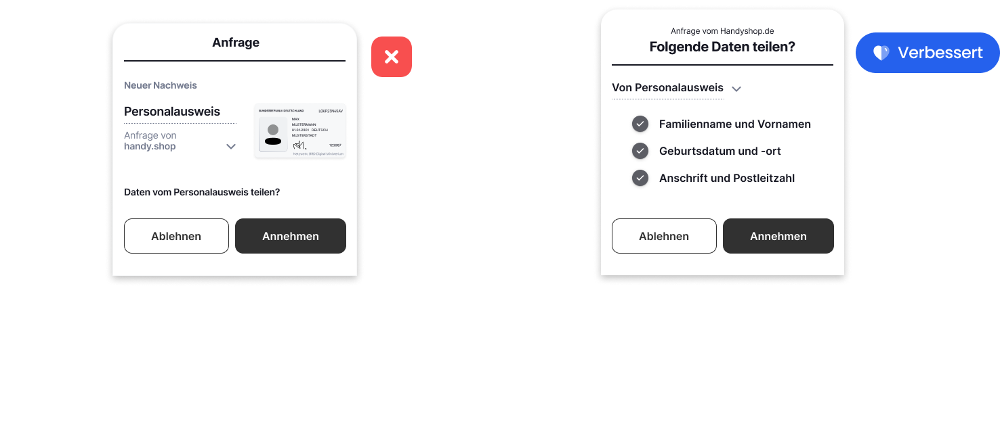
Startscreen
Verbessertes Design aus Erkenntnissen der Recherche
Um das Problem der aufkommenden Unübersichtlichkeit einer ID-Wallet zu beheben, habe ich die Nachweise in Kollektionen eingeteilt.
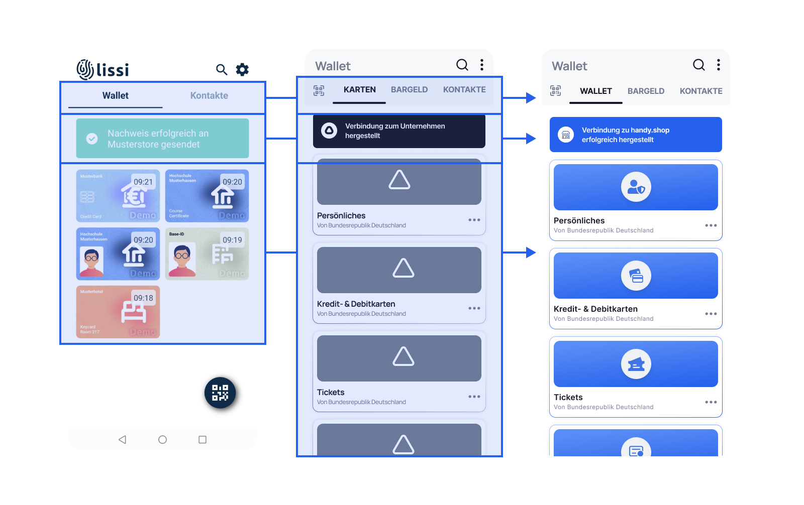
HiFi Prototype
Finaler Prototype im high-fidelity Design
Im folgendem sind verschiedenste User Flows dargestellt.
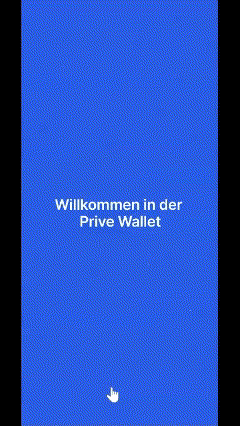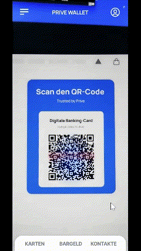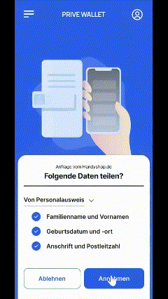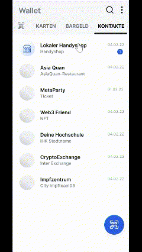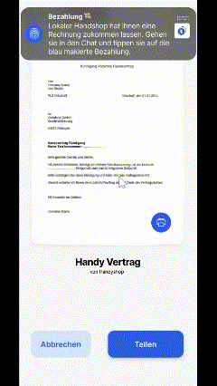
Zukunft
Nachweise im Chat teilen (mobile experience)
Ich plane noch ein Experience Design für das teilen von eigenen Credentials im Chat mit einem anderem User.
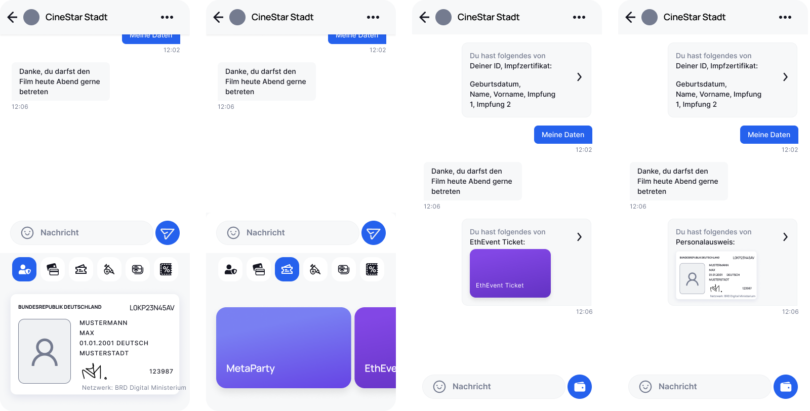
Du hast noch Fragen?
Schreib mich doch einfach direkt an.
Thank you! Your submission has been received!
Oops! Something went wrong while submitting the form.